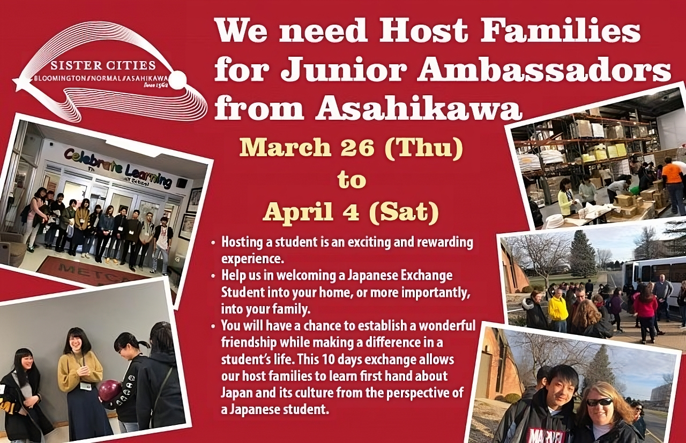

Since 1985, the Bloomington-Normal Asahikawa Sister Cities Committee has sponsored a junior high student home-stay exchange program in Asahikawa, Japan.
Each year, a group of up to 15 students are selected from the Bloomington-Normal area to travel to Asahikawa for approximately two weeks, usually during the month of June. On the trip the students stay with host families, experience everyday Japanese life, and tour cultural, historic, and recreational sites. This program offers students the opportunity to see another culture up close and personal. The group is chaperoned by two or three adults, usually including at least one member of the Sister Cities Committee.
Prior to departing, students and chaperones are required to meet on a regular basis for preparatory training classes. During these sessions, participants learn basic language skills, basic Japanese culture and customs, and how to prepare for international travel.
This program is a great introduction to Japanese language and culture. Many students who have participated in the Junior High Program often become interested and later apply for the High School Program.
For Application please click here.
Click here for presentation material for our informational meeting on 1/20/19.
Every year, around the end of March, the Bloomington-Normal Committee hosts junior high students from Japan for approximately one week. For some students, this will be their only chance to visit America. During their trip, the students stay with local Bloomington-Normal host families and get a glimpse of typical American life. During the weekdays, the committee arranges activities such as visiting local schools, WJBC, Artful Design, Beer Nuts, Bloomington and Normal City Hall, Upper Limits, Springfield, and Chicago. In the evenings and on weekends, the students spend time with their host family. We also host a welcome party and farewell party for all of our students and the host families just like the committee in Asahikawa does when our students visit.
The junior high program has been postponed due to the pandemic. If you would like to be contacted about being a host family in the future, please fill out this form.
Host family application is downloadable (click here) and send it to jeff.kroesch@bnsistercities.org.
